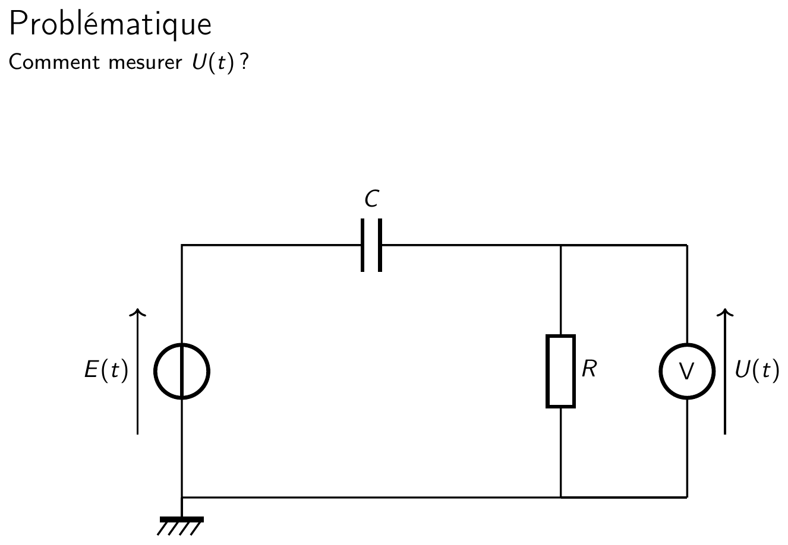
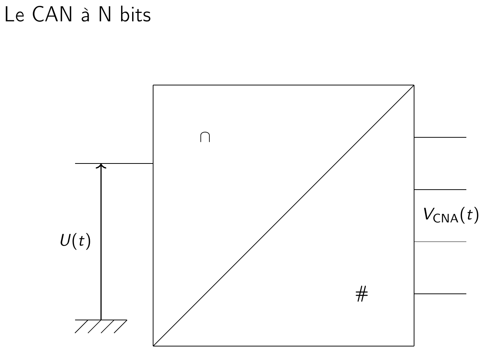
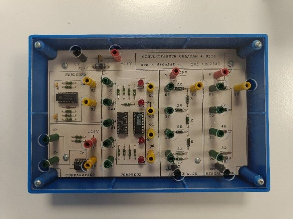
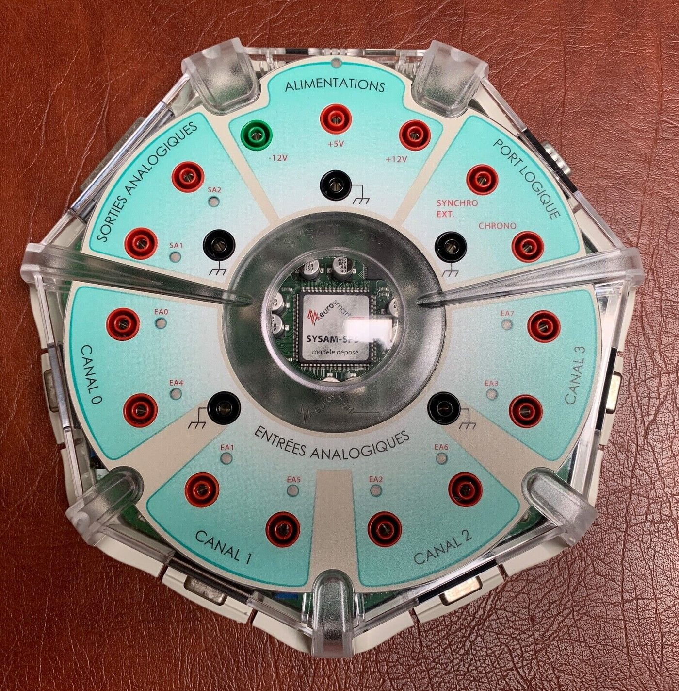
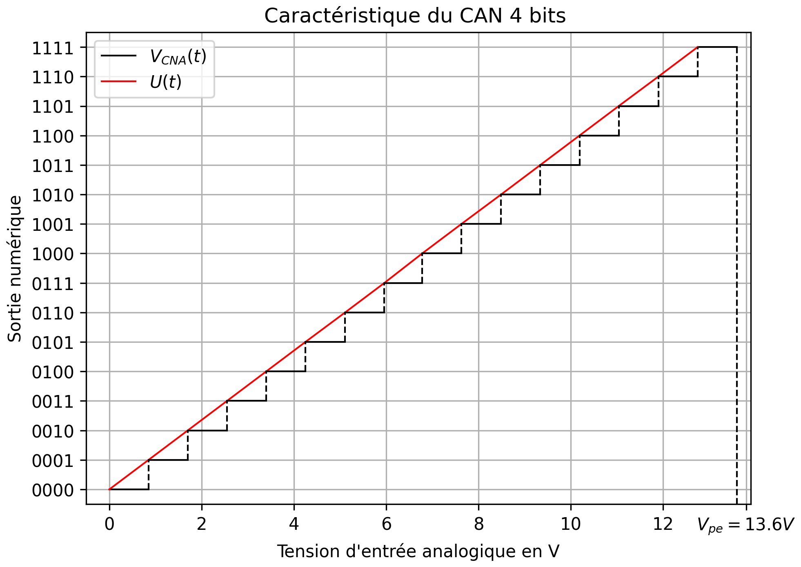
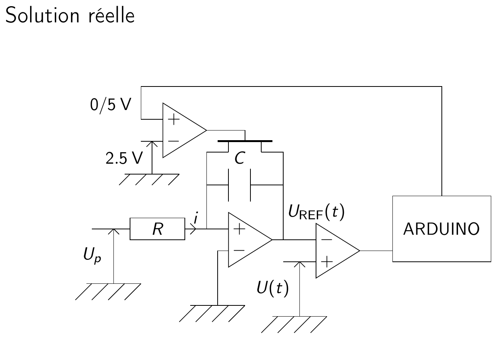
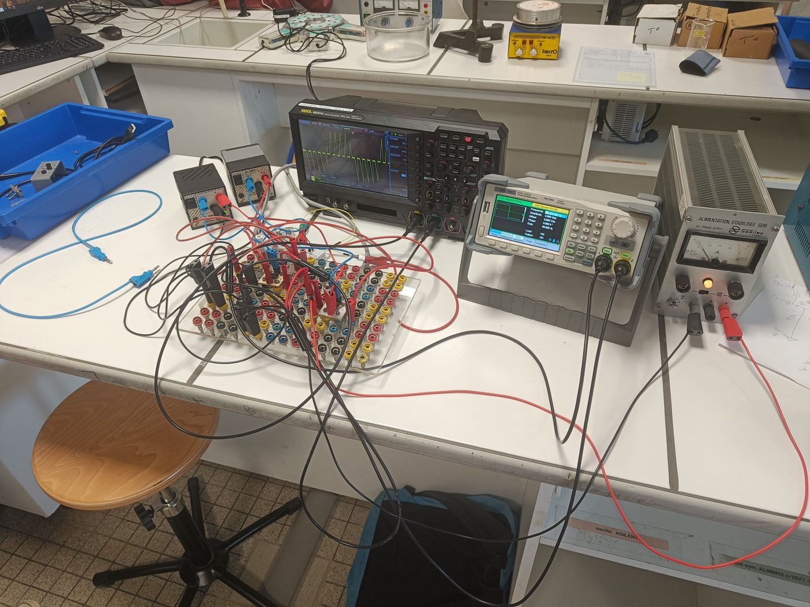
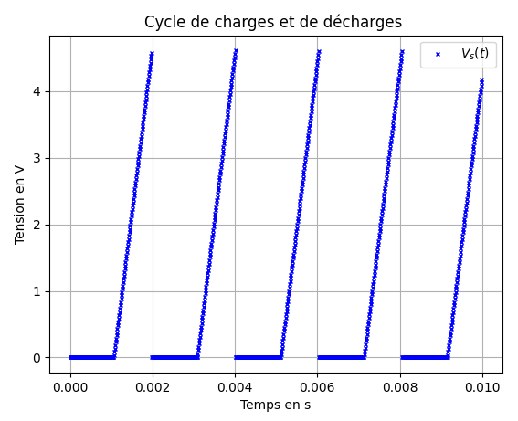
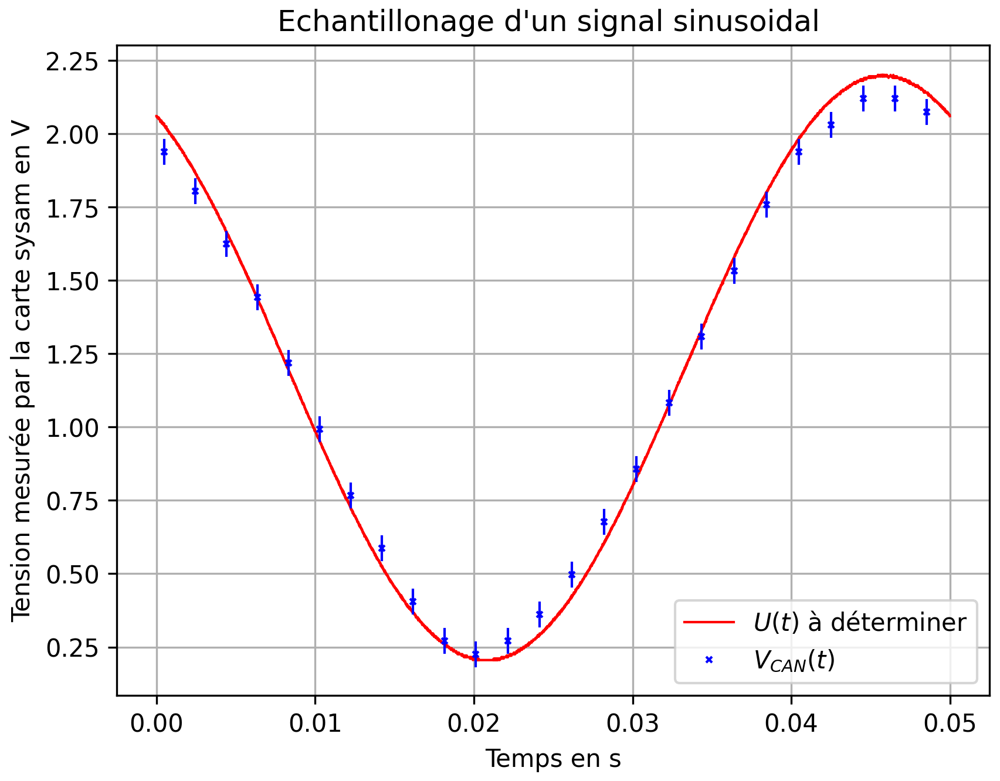
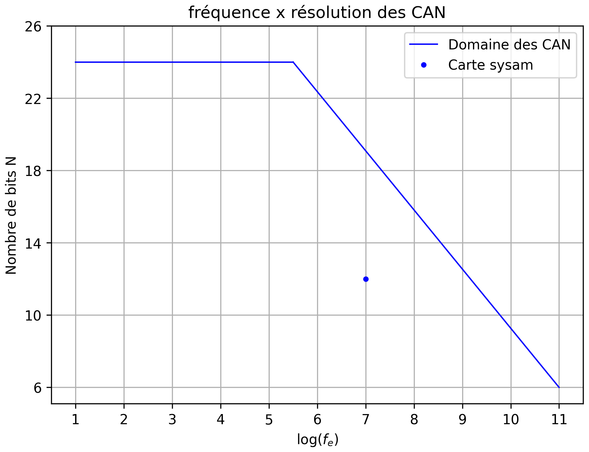

Projet · TIPE 2025
Conversion Analogique-Numérique
Étude du fonctionnement des convertisseurs analogique-numérique (CAN), comparaison de trois dispositifs réels, puis conception et test d'un CAN à rampe simple piloté par Arduino.

Contexte
Un signal est l'évolution d'une grandeur physique au cours du temps. Beaucoup de grandeurs que l'on souhaite mesurer ou traiter — une tension, une position, une température — sont analogiques : elles varient de façon continue. Or les systèmes numériques (microcontrôleurs, ordinateurs) ne manipulent que des nombres binaires. Il faut donc un intermédiaire capable de transformer un signal analogique en une suite de valeurs numériques : le convertisseur analogique-numérique, ou CAN.
Ce TIPE part d'une question simple : comment mesurer une tension $U(t)$ inconnue et variable dans le temps, et la traduire fidèlement en une grandeur numérique exploitable ?

Objectifs
L'objectif est triple : comprendre le principe de fonctionnement d'un CAN à rampe (comparaison d'un signal inconnu à une tension de référence croissante), caractériser deux CAN existants pour en extraire les deux paramètres clés — le quantum $q$ (plus petite variation de tension détectable) et la fréquence d'échantillonnage $f_e$ — puis concevoir, câbler et tester mon propre CAN à rampe simple autour d'un montage à amplificateurs opérationnels et d'une carte Arduino.
Conception
Le principe d'un CAN à rampe est le suivant : un compteur incrémente une tension de référence $U_{REF}(t)$ en escalier (générée par un CNA), qui est comparée en continu à la tension à mesurer $U(t)$. Dès que $U_{REF}(t)$ dépasse $U(t)$, le comptage s'arrête : la valeur du compteur donne alors la conversion numérique du signal.

J'ai commencé par caractériser deux CAN existants en laboratoire : un boîtier pédagogique 4 bits (Didalab) et l'entrée analogique 12 bits de la carte d'acquisition Sysam SP5. Pour chacun, j'ai mesuré le quantum $q = V_{pe}/2^N$ (résolution en tension) et la fréquence d'échantillonnage $f_e$ à partir de l'acquisition d'une rampe de tension connue.


Sur le boîtier 4 bits, on observe clairement la quantification du signal d'entrée : la sortie numérique progresse par paliers, avec un écart maximal de 1 LSB (quantum) entre la tension réelle et la tension mesurée.

Conception de mon propre CAN
Pour aller plus loin, j'ai conçu un CAN à rampe simple autour d'un intégrateur à amplificateur opérationnel (qui génère la rampe de tension de référence à partir d'une tension constante $U_p$), d'un comparateur (qui détecte le croisement avec $U(t)$), et d'une carte Arduino qui pilote la remise à zéro du montage et chronomètre la durée de la rampe pour en déduire la valeur numérique.

L'intégrateur impose $U_{REF} = Ri$ avec $i = -C\,\dfrac{dU_{REF}}{dt}$, d'où, à courant d'entrée $U_p/R$ constant :
En mesurant, à l'aide de la carte Arduino, la durée $\Delta t$ entre le début de la rampe et l'instant où elle dépasse $U(t)$, on numérise le signal. La résolution temporelle de l'Arduino ($\Delta t = 10\,\mu s$) fixe directement le quantum du montage :
Valeurs du montage réalisé
$R = 1{,}01\ \mathrm{k\Omega}$ · $C = 1{,}03\ \mathrm{\mu F}$ · $U_p = -4{,}70\ \mathrm{V}$ → $q = 0{,}05\ \mathrm{V}$ · $f_e = 500\ \mathrm{Hz}$
Réalisation
Le montage a été câblé et testé sur table de manipulation, avec un oscilloscope pour visualiser en temps réel la rampe $U_{REF}(t)$ et un générateur basse fréquence pour injecter des signaux tests (rampe, sinusoïde).

Deux difficultés pratiques principales ont dû être résolues : comment décharger proprement le condensateur de l'intégrateur entre deux mesures (ajout d'un interrupteur commandé), et comment synchroniser la remise à zéro des cycles de mesure avec la carte Arduino. La solution retenue utilise une sortie logique de l'Arduino pour piloter un second amplificateur opérationnel en comparateur, qui court-circuite le condensateur à chaque nouveau cycle.

Résultats
Le prototype a ensuite été utilisé pour numériser un signal sinusoïdal de test à 20 Hz. Les points mesurés (avec leurs incertitudes) suivent fidèlement la sinusoïde théorique, validant le principe de conversion.

La comparaison des trois dispositifs met en évidence l'écart de performance entre un CAN pédagogique simple, une carte d'acquisition professionnelle et un prototype fait maison :
| Dispositif | Quantum q | Fréquence d'échantillonnage fe |
|---|---|---|
| Boîtier Didalab (4 bits) | 0,85 V | 18 Hz |
| Carte Sysam SP5 (12 bits) | 0,005 V | 10 MHz |
| Mon prototype (rampe + Arduino) | 0,05 V | 500 Hz |
Replacé sur la carte résolution/fréquence des CAN du marché, mon prototype se situe dans un ordre de grandeur cohérent avec des composants dédiés bas de gamme — un résultat satisfaisant pour un montage entièrement discret piloté par microcontrôleur.
